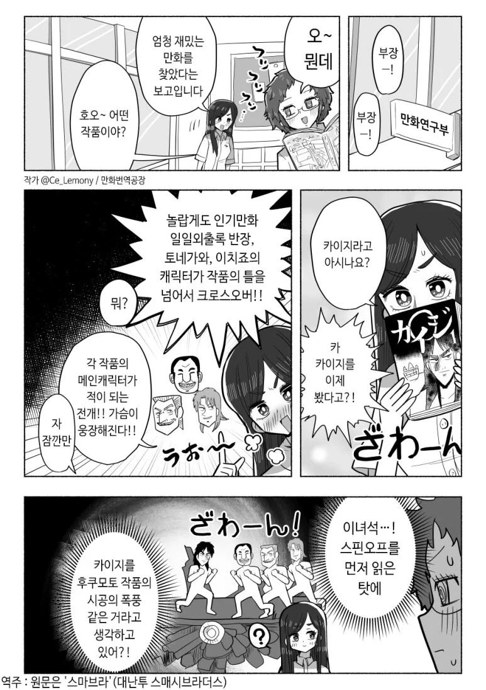

상경생활록 이치죠는 그 정도 체급은 아님. 평이 별로라 빨리 끝났음.
이치죠도 상당히재밋는데 아쉽
이치죠 성격을, 고졸 백수가 툭 하면 주변 사람들에게 히스테리 부리고 사회성이 모자란 쿨찐으로 잡은 게 문제...
토네가와는 직장인들의 공감대를 저격해 호평이었고, 반장은 사회인들의 힐링물로서 호평이었는데, 이치죠 쪽은 성격이 저 모양이라 취준생의 공감대도 제대로 잡지 못 했음. 짠한 자취 스토리는 그나마 호평이었는데, 이치죠가 너무 불호였음.
그런가 옆에잇는 동료가 중화역할해줘서 오히려 캐미느낌나고 신선해서 좋앗는데
일일외출록이 ㅈㄴ 재밌음 나는 그 특유의 센스도 ㅈㄴ 취향이라 ㅋㅋ
사실상 본편은 야생의 날것
사실 본편은 지하노역장까지만 재밌고 그 이후는 스핀오프가 압살한다고 생각함
딱 늪까지가 마지노선이고
이후로는
늪도 재밌었음 너무 늘어져서 문제지
늪부터 너무 길게 끌어버렸다
일단 카이지가 마작패 만지면 급격히 노잼됨ㅋㅋㅋ
ㅅㅂ 공감 ㅋㅋㅋㅋ
아카기 잼던데
마작 배우고 나면 마작이 본편이긴 함ㅋㅋㅋㅋㅋ
그거때매 마작배웠는데 좀쓸만해지려면 오래걸림
일일외출록은 아재 감성을 묘하게 자극해버림 하읏
한국에 인기많은 이유중하나가 군필남성들의 공감성을 은근히 자극해서인게 웃김 ㅋㅋㅋ
외출외박 시작할 때의 산뜻함
위수지역 제한사항들
복귀까지의 카운트다운
부대들어가는 길에서의 먹먹함
아으윽머리가
찾아보니까 2023년 이후로 쭉 휴재네 ㅋㅋㅋㅋㅋ
본인도 어케 마무리내야할지 몰라서 유기한듯
마리오인가 걔 구출이후론 안본듯
걍 늪편 이후 연재중단했다고 생각하는게 맞음
늪편 이후로 작가도 만력이 다 된건지 카드한장 내는데 반년씩 그냥 질질 끌기만하지
엄청난 인간 심리 표현방법이나 반전 스토리 같은건 단 한번도 안나옴
원래 제애가 그래도 약속은 잘 지켰는데 게임 이겨도 돈뺐으려고 하질 않나 검은양복 따돌릴 때 화장실로 피하길래
설마 여장하나? 했는데 진짜 여장나오는거 보고 너무 뻔해서 탄식함
차라리 물탱크로 건물 기울게 했다는게 훨씬 재치있었다...
물탱크로 건물 조정은 개쩔긴했음ㅋㅋㅋㅋㅋ
개 씹 억지인데
바키작가 손수건 배틀마냥 어? 그런가? 하게됨
ㄹㅇ 약간 생각지도 못한 발상의 전환이라
난 "삼풍백화점도 5년 버텼다고 하니까... 응? 가능한가?" 이랬음 ㅋㅋㅋㅋ
시고로쿠! 핀조루!
제목은 바꿔야해
카이지도 존나 팔림 ㅋㅋ
스핀오프가 전부 본편 체급을 가진 미친 만화